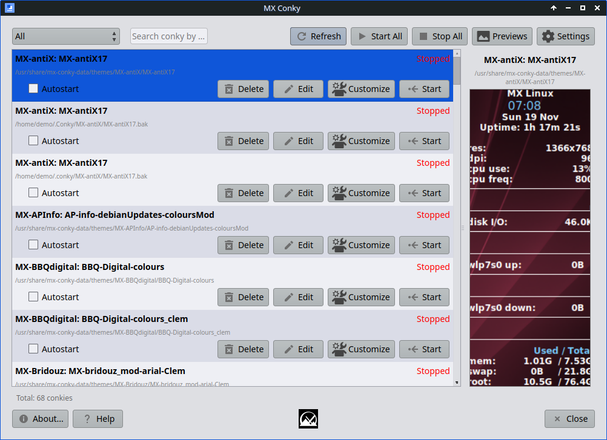
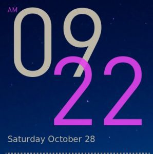

HELP: MX Conky
Background
MX Conky is a comprehensive tool for managing multiple desktop system monitors (conky scripts) simultaneously. It provides an easy-to-use interface for discovering, configuring, previewing, and running conky scripts from various sources. The application supports both legacy and modern conky formats and includes extensive customization options including autostart functionality, search/filtering, and real-time preview capabilities.
Conky is an extremely versatile system monitoring utility that can display on your desktop a wide variety of information. Many creative conky scripts exist that have expanded its original scope to include music, email, weather, updates, etc. Its range has been further extended with the use of Lua, a lightweight and powerful programming language.
Many users find conkies difficult to customize due to their diverse sources, inconsistent configuration layouts, and complex syntax. MX Conky addresses these challenges by providing a unified interface for managing multiple conky scripts, with built-in search paths, content validation, and user-friendly customization options. The application works independently and includes comprehensive theme management capabilities.
Use
MX Conky is a standalone application that provides comprehensive conky management without requiring external tools. It automatically scans configured search paths for conky files and presents them in an organized, searchable interface.
Main Interface
When you launch MX Conky, you'll see the main interface with the following components:

- Toolbar: Settings, Refresh, Start All, Stop All, Autostart, and Preview buttons
- Search and Filter: Filter dropdown and search field to quickly find specific conkies
- Conky List: Left panel showing all discovered conky files with checkboxes and controls
- Preview Panel: Right panel displaying preview images and details for selected conkies
Managing Multiple Conkies
MX Conky supports running multiple conky scripts simultaneously:
- Enable/Disable: Use checkboxes next to each conky to enable or disable them individually
- Autostart Configuration: Set conkies to start automatically on login with customizable delays
- Bulk Operations: Use toolbar buttons to start all, stop all, or configure autostart for multiple conkies
- Real-time Status: Monitor which conkies are currently running with status indicators
Individual Conky Controls
Each conky in the list provides several control options:
- Autostart Checkbox: Toggle the conky autostart on/off
- Edit Button: Open the conky script in your default text editor for customization
- Customize Button: Access built-in customization options for position, transparency, and appearance
- Start/Stop Buttons: Manually control individual conky execution
Preview and Search Features
- Preview Panel: View thumbnail images and detailed information about selected conkies
- Search Function: Quickly locate conkies by name or description using the search field
- Filter Options: Filter conkies by running status (all, running, stopped)
- Preview Dialog: Generate previews. You can update priviews or generate previews for conkys that are missing them
Configuration and Settings
- Search Paths: Configure directories where MX Conky looks for conky files
- Autostart Management: Set up conkies to start automatically with system login
- Copy Function: Copy system conkies to user directories for safe customization
Example
Let’s use MX Conky to alter the color of the default conkies, taking MX-Cowan_less as our example. Here is the original:

Launch MX Conky, navigate to that conky and open it, and click on Run so you can see it while you work. Here is the Color field you will see at the bottom of the MX Conky screen:

Now let’s change the purple to, say, dark orange. Click the little change box with three dots to the right of the purple “Color2” and use one of three ways to change it:
- Click in the “Color name” box and delete everything in it, including the hash symbol; then type in “dark orange” (without the quotes)
- Use the color wheel to select a dark orange color you like, following the tool tip you see when you hover the cursor over it
- Click on the little eyedropper and use it to select an orange color from anywhere on your screen (the Firefox icon, for example)
The result will be an instant change to the conky something like this:

Notice that it took less than one minute to make the change!
Tips and tricks
- If you want to separate elements with different colors that are currently using the same color, find where it is in the text part of the script and insert a new MX color name that is not already being used (e.g., {color5}). Be sure to return to the color before it by adding the preceding color name (e.g., {color4}) at the end of the element.
- If you notice problems with brightness and shadows around a conky when using Compton, try this:
- Look for the line own_window_type and change the word that comes after it to “desktop”; if the line is not there, add it
- If present, try setting own_window_argb_visual to “yes”
- If using Alt + Left click to move a conky does not seem to work, check that the the script has this line: “own_window_type normal“; if another word appears there instead of “normal,” try changing it to see if that helps. Some scripts may be rendered non-functional by such a change, so proceed carefully.
- Some of the conkies look pretty good against their own background instead of being “pseudo-transparent.” To try that, use Conky Manager to set the background to “opaque” or manually change the line own_window_transparent yes to own_window_transparent no. You can adjust the size of an opaque window with Alt + Right click.
- The font used in a particular conky may not support your language, and you will see junk instead of the correct word. This is particularly true for languages that are not based on the Latin alphabet.
- For Greek and Cyrillic, open the script and try changing (Search > Replace) the font to one of the Roboto ones such as Roboto-Light
- For Chinese and other East Asian languages, try wqy-microhei
- If the time is not correct–or if changing the font did not correct a problem with the time text–change if present the line “override_utf8_locale no” to override_utf8_locale yes
- To change to 24hr time, in most cases you can use Conky Manager > Gear icon > Time. A few conkies are set to a time format that can not be changed (the default Gotham, for example). In such cases, click the pencil icon to open up the script itself, and click Search > Replace to change %l (lower-case L) to %H
- When using a conky with a network function, you will probably need to change the interface name–especially given the change that came with Debian Stretch. You can do that most easily with Conky Manager settings > Network; alternatively, edit the conky script by using the Search > Replace screen, changing what is in the script (eth0, for instance). To find out those names, run this command as regular user in a terminal (F4):
cd /sys/class/net && ls --ignore=lo
Technical details
- MX Conky automatically scans multiple search paths including /usr/share/mx-conky-data/themes/, ~/.conky/, and user-configured directories for conky files.
- The application supports both legacy conky format and modern conky.config/conky.text syntax with automatic content validation.
- Each conky theme includes preview images (.png files) and source attribution when available.
- Settings are stored in ~/.config/MX-Linux/mx-conky.conf using Qt's QSettings system.
- MX Conky supports both legacy and modern conky formats automatically. Content validation uses pattern matching to identify valid conky files regardless of format or file extension.
- The included conky themes are based on the work of various creators and have been tested for compatibility. The application includes real-time status monitoring and process management for reliable operation.
- To add new conkies to MX Conky:
- Place conky files in any configured search path (e.g., ~/.conky/ for user conkies)
- Include a .png preview image in the same directory for thumbnail display
- MX Conky will automatically detect and validate conky files using content analysis
- Use the Refresh button to rescan directories after adding new files
- Both legacy and modern conky syntax are supported automatically
License: here.
Development history: Jerry3904 and Adrian
Version: 2025.8
Major Changes:
- Complete rewrite using Qt6 and C++20
- Standalone operation (no longer requires Conky Manager)
- Multiple conky management with simultaneous execution
- Advanced search and filtering capabilities
- Real-time status monitoring and process management
- Autostart configuration with customizable delays
- Preview system with full-screen preview dialog
- Automatic content validation for conky file detection
- Enhanced customization dialog with position and appearance controls